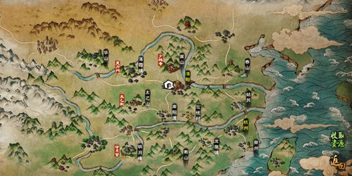
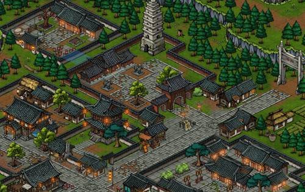
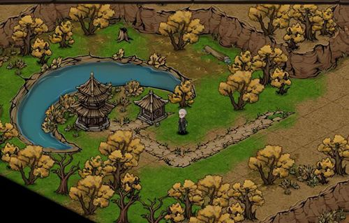
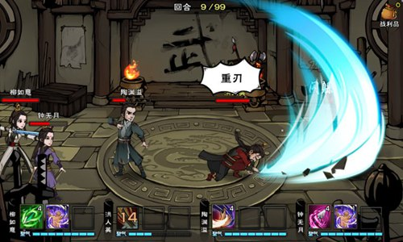
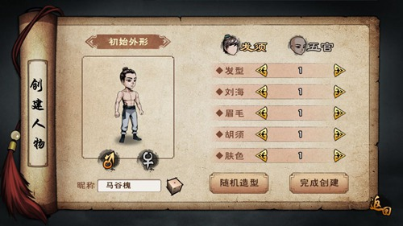
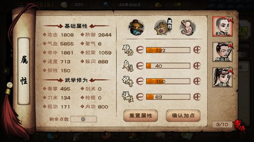
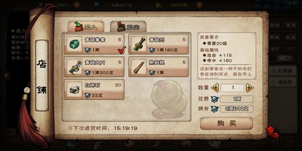
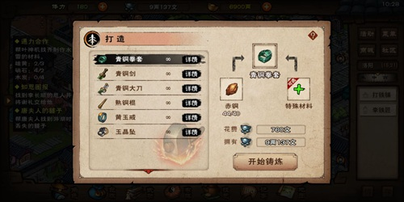
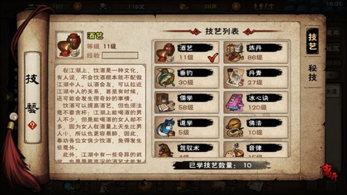

遊戲簡介
大江湖中玩家扮演一個初入江湖的毛頭小子，逐步成長為江湖大俠，遊戲絢麗的打鬥場面和跌宕起伏的故事劇情， 並且致力於打造一個完整的龐大的真實武俠世界。 玩家會面臨一項又一項不同尋常的任務，在完成任務的過程中不斷成長， 玩家還會獲得各種古神兵利刃，練就絕世武功，結交到各種性格的江湖人物，同時還可以與其他玩家比拼武功。
大江湖中玩家扮演一個初入江湖的毛頭小子，逐步成長為江湖大俠，遊戲絢麗的打鬥場面和跌宕起伏的故事劇情， 並且致力於打造一個完整的龐大的真實武俠世界。 玩家會面臨一項又一項不同尋常的任務，在完成任務的過程中不斷成長， 玩家還會獲得各種古神兵利刃，練就絕世武功，結交到各種性格的江湖人物，同時還可以與其他玩家比拼武功。
一、遊戲地圖
遊戲中有不同風格的地圖，每張地圖都有自己獨特的場景與地勢。



二、戰鬥系統
遊戲中戰鬥系統為回合制，玩家每回合可以進行聚氣，然後可以通過自身聚氣的系統，從而釋放技能。

三、角色養成
玩家創建的角色在創建介面就可以進行命名和進行對外形的塑造。


四、裝備養成
在打鐵鋪中可以進行武器的買賣，也可進行武器與飾品的打造與武器淬鍊。


五、技藝與秘技系統
遊戲中有不同的技藝，有一些技藝會對人物的屬性進行影響，一些技藝可以讓人物獲得素材。

煙雨江湖中的出生天賦則有5種，分別為：
1、行俠仗義：上場夥伴的攻擊提升3%。
2、聞雞起舞：每場戰鬥增加10%的閱歷，丹田容量提升100點。
3、酷愛兵器：裝備在身上的兵器威力提升5%。
4、跋山涉水：提升10%的移動速度，視野提升1格，在光線昏暗的地方比普通人看得更遠。
5、妙手空空：每場戰鬥額外獲取更多的銀兩。
天賦方面推薦：聞雞起舞、酷愛兵器或者妙手空空，根據自己的喜好選擇其中一個。
至於出身其實沒有任何影響，選擇武林世家或官宦人家都可以選擇上面的天賦。
南陽渡
（44，24）15赤銅礦
（13，30）10桐木
（8，14）20甘草、金銀花
（22，4）15粗麻
太乙山
（26，30）20甘草、白芍
（2，16）10松木
洛陽
（25，2）20甘草
（11，42）15赤銅
（2，34）10松木
（21，37）15粗麻
落霞鎮
（9，28）10松木
（26，4）15赤銅、黑鐵
（32，22）陰陽花
（41，32）15粗麻
華山
（11，1）20甘草、枸杞、靈芝
（10，37）15黑鐵、雪銀
（25，26）10松木
嵩山
（17，3）16松木
（8，35）20甘草、當歸、人參、靈芝
泰安鎮
（19，21）10松木
（7，4）20甘草、黃精
（33，9）15赤銅、黑鐵
（20，38）15棉花、風蘊珠
姑蘇
（4，22）20甘草
（10，26）10桃木
（28，2）15粗麻、棉花、風蘊珠
杭州
(20,5)10柳木
(30,26)20甘草、地黄、人参
(30,2)15棉花、蚕丝、冰蚕丝
泉州
（15，28）15雪銀、黑玉晶
龍泉鎮
（3，2）15雪銀、黑鐵、血晶
（24，17）20甘草
（3，17）10榆木
（19，5）15棉花、蠶絲、冰蠶絲
衡山
（16，9）20甘草、人參
（7，18）10松木
（20，20）15黑鐵、七星岩
南嶺
（12，21）20甘草、當歸、靈芝
（27，18）10翠竹、湘妃竹
（12，10）15棉花、蠶絲、月光石
雙王鎮
（23，13）15赤銅
（28，16）10松木
（3，23）20甘草、靈芝
（19，32）15粗麻、棉花、風蘊珠
鳳鳴集
（26，20）10翠竹
（22，17）15粗麻、棉花、月光石
（28，31）20茯苓、甘草、靈芝
（2，25）15赤銅、黑鐵、青金石
成都
（31，8）15蠶絲
明月山
（35，18）20甘草、杜仲、靈芝
（10，23）10松木
（35，4）香蕉樹
（24，8）紫丁香
（25，8）牡丹花
（24，9）杜鵑花
（25，9）玉蘭花
（14，6）蓮藕
大雪山
（4，21）15雪銀，紫金【需要先打敗80級礦點守衛】
幽州
（33，36）樺木
敦煌
（12，3）雪銀
【初出茅廬】
（22.16）找賀莊主選擇闖蕩江湖，去（25.16）廂房點擊檀木櫃打開得到1棉甲和100文，穿上棉甲。點擊雕花木床，點睡覺。接下來去找賀莊主，然後去（22.13）找陳師傅，獲得200文，去（22.25）找老王買1燒刀子，回去找陳師傅給予。接下來是武器選擇，所有人物可以學習任意種類的武功，裝備任意種類武器，所以隨便選。裝備武器後去找陳師傅，選擇請教武藝，選擇確定。突破武功後再找陳師傅對話。再點擊陳師傅。回去找賀莊主，選擇一位隨從加入。
蘇念雪：初始劍，先天天賦：劍法威力提升2%
厲若海：初始刀，先天天賦：刀法威力提升2%
陳元封：初始棍，先天天賦：長兵器威力提升2%
Tips：20級之前都可以在廂房免費睡覺。隨從三選一，其餘兩位後續無法加入。
去（7.15）進入山洞，進去後（1.16）位置有一個鐵皮箱，打開獲得1麻布頭帶和1麻布纏手。來到（10.2）和強盜頭目對話，選擇哪一個都一樣，觸發戰鬥。打贏後獲得1銅鑰匙和1藏寶圖。
Tips：先去忘憂村（21.21）雜貨鋪處購買鐵鍬，去藏寶圖顯示的位置，打開包袱選擇鐵鍬點擊挖掘，打開寶箱獲得5點聲望、500文銅錢、3碧靈丹、1經驗丹、2順脈丹和10明慧丹。
來到（15.9）處選擇開鎖，（18.10）處打開破陶罐獲得30文銅錢。 （17.8）處打開破木箱獲得20文銅錢和1銅指環。來到（17.9）點擊小環，選擇解開麻繩。原路返回走出山洞。
來到（5.21）處觸發戰鬥，打贏後來到（9.30）處觸發劇情。之後回去找賀莊主。去（24.21）找張鐵匠，再去（8.10）挖赤銅，挖完後回去找張鐵匠選擇給予赤銅。點擊旁邊空白處可以選擇不打造武器。回去找賀莊主，獲得1粗布包裹和1書信。包袱裡面選擇打開粗布包裹獲得200文銅錢、5跌打藥和2火折子。
【初入南陽】
從忘憂村（0.17）進入南陽渡，先去（29.19）找店小二選擇落腳點，選擇確定設置落腳點。然後去（20.24）找張玄清給予書信，選擇哪個都一樣，然後選擇應下此事。
【退婚風波】
來到（20.5）觸發劇情，選擇行俠仗義，觸發戰鬥。打贏後和車夫打聽，獲得1禮盒。回去將禮盒給予張玄清。然後再和他對話，兩種情況：
一、如果沒有學過內功，會讓你去（20.18）找徐震天免費學會1吐納功，再找徐震天打聽。然後回去找張玄清，獲得1書信。
二、如果已經學過內功，獲得1藍田玉戒（10級）和1書信。
來到（33.9）觸發劇情，選擇硬闖會觸發戰鬥，打贏後進去; 選擇送信直接進去。來到（34.2）找裘嘯天給予書信，回去找張玄清。
Tips：去（16.26）閨房搜索，獲得500文。
【鶯鶯迷蹤】
來到（29.19）找店小二打聽張鶯鶯，回去告訴張玄清。來到（34.2）觸發劇情。到泥巴村（39.31）找範鵬打聽陌生面孔，然後去（51.23）觸發劇情，打贏後找裘嘯天對話。
【又起波瀾】
回去找張玄清，再找他對話。
【危機四伏】
來到（26.21）觸發劇情，打贏後找田鵬對話，回去找張玄清，再找田鵬。來到（17.6）觸發劇情，然後去（18.6）找小頭目，觸發戰鬥。打贏後獲得1牢門鑰匙。
【地牢劫獄】
去（28.3）觸發劇情，搜索之後進入山洞。進去山洞可以使用火折子照亮。來到山洞（8.22）破瓦罐獲得100文。 （24.23）打開破木箱獲得80文和1洗髓丹。 （19.0）走出山洞。來到南陽渡（35.5）進入地牢，來到地牢（2.4）選擇硬闖，打贏後來到（2.3）選擇開鎖，（2.1）找裘嘯天對話。
【南陽風波】
從山洞原路返回來到（27.12）找裘嘯天對話，去找張玄清打聽書房，選擇請求進入，來到（19.27）選擇書架，可以將三本書全部選擇取走。在包袱裡翻閱丹方秘錄。兩種選擇：
一、去（26.23）找老郎中選擇軟筋散，選擇願意，花費500文，等待10分鐘。找老郎中選擇解藥，獲得1軟筋散解藥。
二、先找老郎中打聽煉丹術，花費300文選擇請教，學會技藝【煉丹】。然後去旁邊屋子裡點擊藥爐選擇煉丹，選取藥材放入1金銀花和1白芍，然後煽火煉丹，獲得1軟筋散解藥。
Tips：如果是自己煉製的軟筋散解藥，額外獲得1氣引術（一般內功）。
回去將軟筋散解藥交給裘嘯天，獲得1毒龍幫信物。
從北邊（14.0）進入洛陽，來到洛陽（11.13）找僧人給予毒龍幫信物，來到（31.14）找周鏢師給予毒龍幫信物，來到（3.35）找李獵戶給予毒龍幫信物。回去找裘嘯天，到（25.15）選擇木墩點擊劈柴，任意選擇木頭進行劈柴。
Tips：不同的木頭得到的木柴數量也是不同的，相同的木頭也有幾率獲得不同數量的木柴。
獲得10木柴後，等待天黑，來到（33.9）點擊寨牆外，選擇放火。然後進去觸發戰鬥。來到（34.2）觸發劇情，打贏孫邪後來到（47.2）觸發劇情，選擇説明裘嘯天，答應之後回去（34.2）找裘嘯天，再點擊他，選擇應下此事，獲得1青龍玉玦。
【東都洛陽】
從南陽渡（14.0）進入洛陽，來到洛陽（13.31）找勾玉夫人對話，再點擊勾玉夫人。去（17.17）找莫掌櫃打聽杏兒蹤跡。
【行蹤之謎】
來到（7.12）找張霸天選擇杏兒蹤跡，觸發戰鬥，打贏之後，來到（28.29）觸發劇情。
來到（31.33）點擊平地選擇搜索，選擇鑽進去，進去後發現一具女屍，點擊女屍選擇驗屍，點擊檢查頭部，獲得1翠玉耳環。選擇鑽狗洞回去找勾玉夫人，給予翠玉耳環。
【兇殺謎案】
等待半小時後收到勾玉夫人的飛鴿傳書，回去找勾玉夫人。從洛陽（0.22）來到落霞鎮，來到（26.35）找村民打聽被害之人，再打聽埋葬之處。來到（33.21）挖掘。來到（33.22）找張大牛選擇說服，需要說服四次。然後開始挖墳，點擊棺材選擇開棺，選擇驗屍，選擇檢查手部，選擇掰開，獲得1木牌。
回去找勾玉夫人給予木牌，去（33.13）找萬青山選擇給予木牌，來到（9.26）選擇搜索。回去找勾玉夫人，來到（28.34）找九兒娘，在九兒家選擇搜索，選擇木櫃當中，觸發劇情，選擇出手相救。觸發戰鬥。
【按跡循蹤】
打贏後來到（34.37），選擇替天行道。
【水落石出】
打贏後點擊張雄的屍體選擇搜身，多搜索幾次，獲得350文和1血煞功，搜身不消耗體力。回去找勾玉夫人，獲得1金匱要略。
【金匱要略】
回去找裘嘯天給予金匱要略。
【泰安林家】
從洛陽（39.22）進入泰安鎮，來到（30.35）找林有雄拜訪，選哪一個都一樣。
【扇子崖之亂】
繼續點擊林有雄，選擇答應。
【扇子崖】
來到（30.6）觸發劇情。
【下崖之法】
來到（24.17）找火工道人打聽扇子崖，再選擇下崖之法，選擇同意。先去洛陽（29.28）福壽店購買2個蠟燭，來到（25.15）點擊供奉桌選擇更換新燭，消耗2個蠟燭。然後來到（21.3）點擊香爐選擇清理香灰，獲得1香灰。回去找火工道人交差。來到供奉桌，選擇轉動燭台，點擊洞口選擇進入。
【玉玦線索】
進去後把整個山洞逛一遍，把所有的蛇都殺了，後面任務需要。沿著右下方走來到（19.16）位置選擇啟動機關。來到（29.24）點擊葉神機，選擇白虎玉玦，選擇身份，選擇帶其離開，再點擊葉神機。
【初露端倪】
離開山洞觸發劇情，回去找林有雄觸發劇情，從（31.41）進入姑蘇，來到姑蘇（24.33）找陸墨蕭。
【通力合作】
回去找葉神機，收集3雄黃、2硝石和5木炭給他，等待10分鐘。找葉神機，獲得1水雷。回去找陸墨蕭，來到（11.19）選擇硬闖，進去點擊搜索，獲得1書信。回去將書信給予陸墨蕭。
Tips：不能硬闖的話，可以晚上去（12.20）搜索獲得鑰匙，然後去（11.19）開門拿書信。
等到酋時，來到（37.43）觸發劇情，在包袱裡面使用水雷。使用輕功沿著小船跳到大船上。來到福船（26.41）觸發劇情，選擇哪一個都一樣，打贏之後原路返回找陸墨蕭。
【審問戚夫人】
需要聲望達到50才能繼續主線。來到（23.30），點擊戚夫人選擇陳年舊事，選擇石湖山莊，選擇白虎玉玦，選擇玉玦下落。
【玉玦行蹤】
從南陽渡坐船來到雙王鎮，來到（21.4）觸發戰鬥，選擇硬闖。打贏之後，來到（21.1）觸發戰鬥，打贏之後，點擊老和尚選擇鬆綁，選擇朱雀玉玦。
【淨空行蹤】
來到洛陽（11.14）找弘明主持選擇小沙彌，再找他選擇劉庸下落。來到（25.25）找王夫人打聽劉庸下落。
【白馬寺兇案】
來到杭州（35.10）找劉銘打聽劉庸下落，觸發戰鬥，打贏之後，追他到（36.33），點擊劉庸，再點擊他，給劉庸1文房四寶，等待十分鐘。
【尋找真兇】
去（35.10）找劉庸索要畫像，獲得1畫像。來到洛陽（13.31）找勾玉夫人給予畫像，選擇請講。
【有個姑娘叫小薇】
來到（21.35）點擊小薇，再點擊惡霸選擇驅趕，打贏之後點擊小薇，回去找勾玉夫人轉告，獲得2兩。來到（29.28）福壽店購買1棺棺材、1蠟燭和1壽衣。然後回去給予小薇，再點擊小薇。回去找勾玉夫人回復消息。
【抓捕溫猛】
來到(7.15)觸發劇情，選擇置若罔聞，來到(7.12)觸發戰鬥。打贏之後點擊溫猛，再點擊張霸天詢問，選擇玄水堂所在，選擇立即前往。
【闖玄水堂】
來到玄水堂(7.15)選擇硬闖，來到(7.11)觸發劇情，陷入迷燈陣，來到(10.20)走出迷燈陣。來到(7.9)觸發戰鬥，來到(7.6)選擇硬闖，來到(7.4)
點擊玄水堂主，選擇攻擊。
來到（5.8）選擇硬闖，來到（3.8）進入地牢，來到（2.3）選擇開鎖。來到（2.1）點擊屍體，選擇查看死因，選擇搜查屍體，獲得1兩。原地點擊牢房搜索觸發劇情。走出地牢，來到（13.7）點擊庫房總管選擇交談，選擇攻擊，打贏之後再打開寶箱，獲得2兩、5跌打藥、1黑鐵扳指和2七殺刀法殘頁。來到（9.17）找小廝返回洛陽。
【朱雀線索】
來到洛陽（11.15）點擊神像選擇查看，選擇取出，獲得1錦盒。
【交還錦盒】
將錦盒交還給老和尚。
【須彌之託】
收到郵件後，去雙王鎮（21.1）找老和尚，再點擊老和尚，選擇詢問往事，選擇衡山前輩和先師遺訓，獲得1劍柄。前往嵩山（10.17）找玄慈方丈打聽慧覺禪師，獲得1方丈手信。來到（7.11）選擇出示手信，（2.2）找道遠禪師給予劍柄，選擇肉身捨利和劍柄信物，選擇進入塚塔。
Tips：去嵩山路途中會多次觸發戰鬥，不消耗體力，不獲得經驗，建議坐馬車去。方丈手信後續會消失，所以及時進入藏經閣提升佛法。
【慧覺塚塔】
出去找玄慈方丈，選擇慧覺塚塔，選擇接受考驗。
【三陣考驗】
來到（17.17）找金剛羅漢，分別選擇力之陣、敏之陣和耐之陣。挑戰成功後，回去找方丈。
【塔林迷障】
來到（3.4）選擇搜索，選擇進入。往右下方走到下一個迷宮裡。
來到（2.2）點擊石柱選擇刻字，輸入"寒"字。
沿著左上方走來到（2.28）點擊石柱選擇刻字，輸入"人"字。
原路返回（2.2）再沿著右上方來到（28.2）點擊石柱選擇刻字，輸入"心"字。
原路返回（2.2）再往右下方來到（28.28）點擊石柱選擇刻字，輸入"覓"字。
原路返回至（14.14）觸發劇情，來到（3.3）點擊蒲團選擇跪拜，選擇拚命掙扎，選擇四下觀察。
Tips：石柱散發淡淡光芒。
【肉身舍利】
來到（3.2）點擊骨灰選擇搜尋獲得1青絲絹帛。
【神秘絹帛】
包袱裡展開青絲絹帛，獲得1碎圖。離開密室，來到嵩山。找方丈給予青絲絹帛。
【劍柄之謎】
來到落霞鎮（20.17）找謝毅給予劍柄，再來到（14.11）找楚休狂給予劍柄，選擇詢問詳情。
【天刀碎圖】
再點擊楚休狂選擇索取碎圖，選擇繼續詢問，選擇應下此事。來到華山西南方打敗120個40級野怪。打完後回去找楚休狂復命，選擇索取碎圖，選擇指點迷津，選擇應下此事。去雙王鎮（15.33）殺洪鈞獲得七殺刀法，刷新時間一小時。將七殺刀法
| 日付 | 2016年9月11日（日）雨天中止 | 2016年9月11日（日）雨天中止 |
|---|---|---|
| 時間 | 14:00〜16:00 | |
| 会費 | 無料 | |
| 場所 | 円山原始林 登山道入り口前ひろば | |
| アクセス |
地下鉄東西線 円山公園駅から徒歩15分 Googleマップで見る |

なき声：チーチー、ジュリリ
ひとこと：将来のゆめは仲間と一緒にアイドルグループをつくることです。みんな応援してね。

なき声：ヒー フィー
ひとこと：ウソって言っても正直ものよ。口笛みたいな悲しげな声をしてるって言われるわ。

なき声：キョロローン
ひとこと：天然記念物のオレが華麗なパーカッションで音楽会を盛り上げるぜ！

パート：リコーダー
ひとこと：たくさんの人に鳥さんたちの歌声をきいてもらえたらうれしいです。